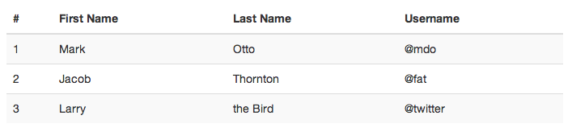
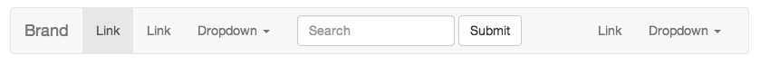
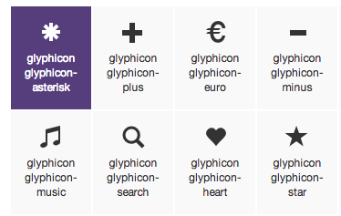

Responsive Design Meets JFK
1960s images through modern technology
Created by Eli Zoller / elizoller.github.io
University of Texas at Arlington Libraries
TCDL 2014
1. The Project
2. What is RWD?
3. Bootstrap Introduction
4. What we created
5. Lessons Learned
The Project
"Howdy, Mr. President!"
A Fort Worth Perspective of JFK

"Howdy, Mr. President!"
companion online exhibit to the physical exhibit
focus on JFK's time in Fort Worth
showcases over 80 photographs from the Fort Worth Star-Telegram
Where to start?
Responsive Web Design
- optimal viewing across multitute of devices
- adapts/responds to the viewing environment
Why RWD?
- 57% of American adults are cell internet users
- 34% of cell internet users mostly use their mobile device to access the internet
Pew Internet Study 2013
What makes it different from a mobile site?


1. Creative Commons Attribution-Share Alike 3.0 Unported license to Zach Vega
2. This file is licensed under the Creative Commons Attribution-Share Alike 3.0 Unported license to Zach Vega
3. This file is licensed under the Creative Commons Attribution-Share Alike 3.0 Unported license to Sir Stig
4. This file is licensed under the Creative Commons Attribution 3.0 Unported license. Attribution: Matthieu Riegler, Wikimedia Commons
{kind=link}
{kind=link}
{kind=link}
{kind=link}
So you want to do RWD?
How?
- a fluid grid
- flexible images and media
- CSS media queries
One Solution: Front-End Framework
- a pre-packaged set of CSS, Javascript, and HTML
- to help make development easier and faster
- aids with browser compatibility
- rapid prototyping
Introducing Bootstrap
-open source front-end framework
-set of minified CSS, JS, and fonts
-12-column flexible grid layout
-pre-established components for glyphs, buttons, navigation, forms, and more
Pros of Bootstrap
- pre-designed UI
- highly customizable with CSS-preprocessor Less
- compatible back through IE-8
- built-in accessibility support
Cons of Bootstrap
- Bootstrap sites are "bootstrap-y"
- large file sizes- unused code
How to use Bootstrap
CSS
UI Components
 JS

Individual or compiled
Finished Product
library.uta.edu/jfk
Home Page

Section Page
Individual Image Page
Lessons Learned
-RWD is the way to go
-Test, test, test
-Frameworks may or may not be the solution to your problems
Thanks for listening!
Made using Git, Reveal.jsHosted on Github